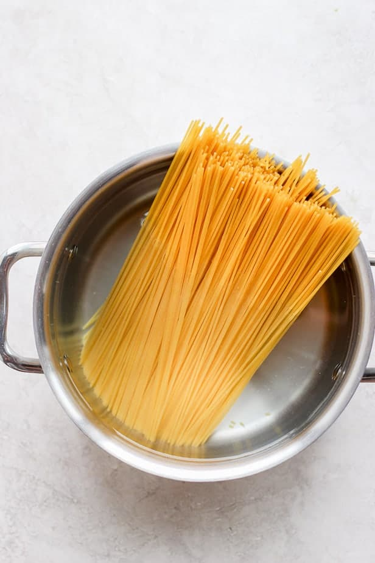
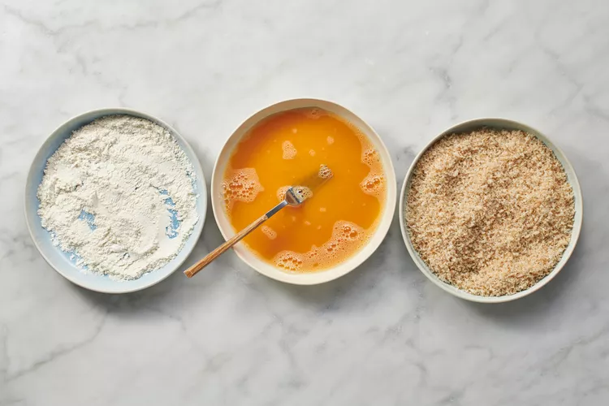
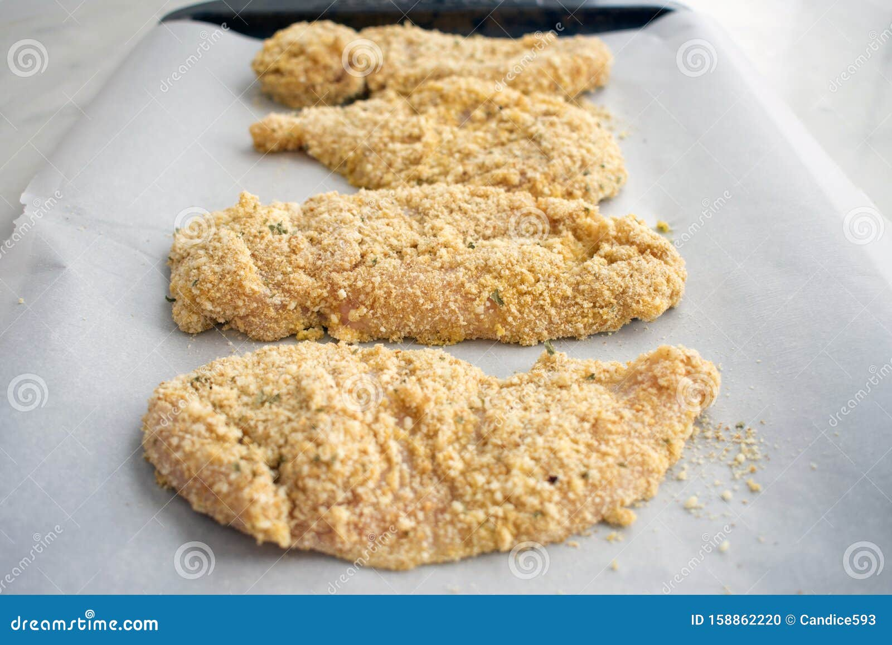
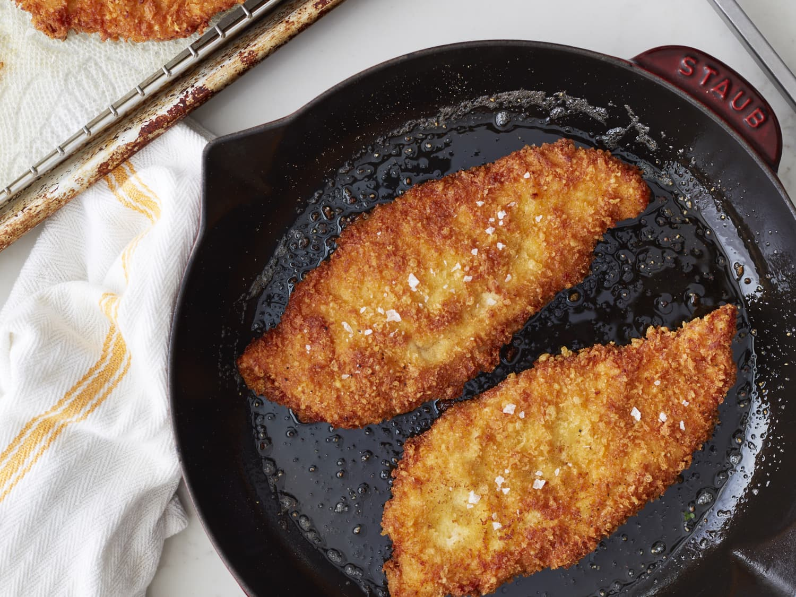
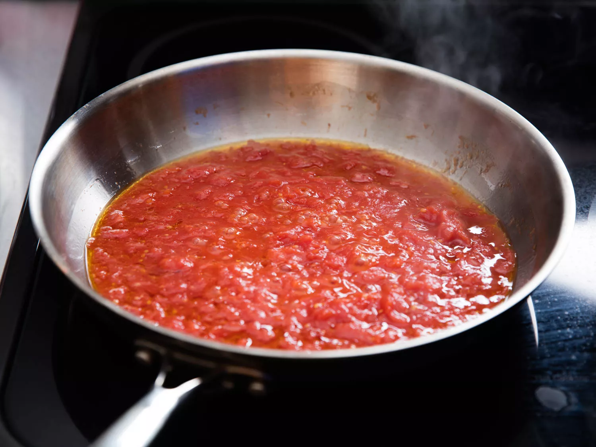
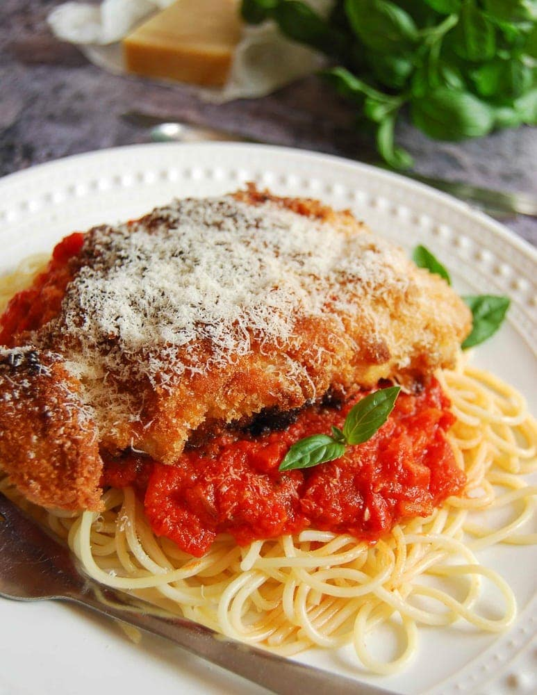

Chicken Cutlets with Spaghetti Recipe
Ingredients:
- 200g spaghetti
- 100g boneless chicken breast
- 2 large eggs
- Flour (for dredging)
- Breadcrumbs
- Vegetable or Canola Oil (for frying)
- 50g Parmesan cheese
- Italian seasoning
- Salt
- Pepper
- Pasta sauce (marinara or your favorite sauce)
- Fresh parsley
Instructions:
- Prepare Breading Station
- Bread the Chicken Cutlets
- Boil the pasta in salted water until al dente, following the package instructions. 
- Fry the Chicken Cutlets
- Heat and Add Sauce to Pasta
- Drain Pasta and Serve
In a medium-sized bowl, combine breadcrumbs, Italian seasoning, and Parmesan cheese. In another bowl, beat the eggs. Set up the bowls in a sequence along with a plate of flour for dredging.
Pat the chicken breasts dry with paper towels, then season with salt and pepper. Dredge each chicken breast in flour, shaking off excess. Dip into the beaten eggs, then coat with the breadcrumb mixture, pressing to adhere the coating well.
Heat oil in a large skillet over medium-high heat. Once hot, fry the chicken cutlets in batches until golden brown and crispy on both sides (about 4-5 minutes per side). Set aside on a paper towel-lined plate to drain excess oil.
While the chicken cutlets are frying, heat your favorite pasta sauce in a saucepan over medium heat. Once the pasta is cooked and drained, toss it in the warmed sauce to coat evenly.
Drain the spaghetti, then toss with a little olive oil and a sprinkle of Parmesan cheese. Serve the crispy chicken cutlets alongside the pasta. Garnish with fresh parsley and extra Parmesan, if desired.
